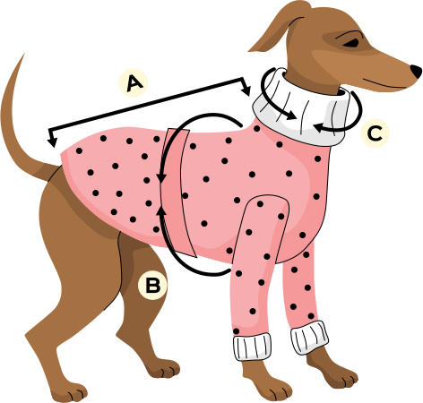

Como tirar as medidas do seu pet?


Para encontrar o ajuste perfeito e garantir o conforto do seu melhor amigo, você precisará de
uma fita métrica flexível. Se não tiver uma, use um barbante e depois meça o comprimento dele
com uma régua.
| NÚMERO | PESCOÇO | TÓRAX | COSTAS |
|---|---|---|---|
| 1 | 16cm | 25cm | 22cm |
| 2 | 23cm | 32cm | 28cm |
| 3 | 30cm | 40cm | 35cm |
| 4 | 37cm | 48cm | 41cm |
| 5 | 44cm | 55cm | 48cm |
| 6 | 51cm | 63cm | 55cm |
| 7 | 58cm | 80cm | 61cm |